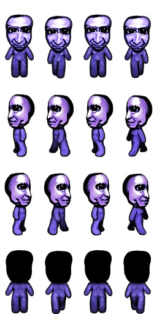

Ao Oni is a Japanese RPG Maker game developed by noprops and was first released in November 2008. While the viduals and
graphics of the game are not anything to be impressed by, the game gained a large following due to it's horror aspects.
Although, most of the credit goes to to the chase music which effectively brings a chilling atmosphere.
In Japanese, ao (青) means blue and oni (鬼) is a demonic creature often depicted to be large with a fearful appearence!
The game follows a very simple story where Hiroshi, Takuro, Mika, and Takeshi enter a deserted mansion that is rumored
to be haunted.
It doesn't take long for things to go wrong when a mysterious creature begins to attack them. If one of
them is killed, then they will also turn into one of the creatures. Control Hiroshi and explore the mansion where you
will need to solve various puzzles to find an escape route. Be vary cautious of the creature as it will chase you at both
scripted and random times. Outrun him, hide, or get captured.
////////describe the gameplay and what's at stake in the game
////////describe the narrative arc of the game
-CHARACTERS: Ao Oni, Hiroshi, Takuro, Mika, Takeshi, Fuatty/Blockman Oni
...
////////describe how the game ends
During my childhood, I greatly appreciated indie RPG Maker games and often played them. I decided to revisit
Ao Oni for the purpose of this project. It is a short playthrough that took me about five hours to complete.
Although there were many times where I jumped in my seat, I enjoyed every moment of this game. My favorite aspects
will always be when the creature appears at random and the music that follows. The popularity of Ao Oni has
grown so much so that there are now movie adaptations as well as a light novel series and manga.
////////include a conclusion where you describe that the game means to you and/or why you find it interesting, compelling, and fun
...
////////include at least one refernce from our readings
////////include bibliographic notes
